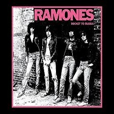
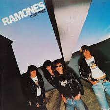
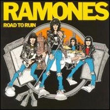

Feito por Yuri Philippe Maris Rezende
Ramones
Biografia
Os Ramones foram uma banda norte-americana de punk rock formada em Forest Hills, no distrito de Queens, Nova York, no ano de 1974. Considerada como precursora do estilo e uma das bandas mais influentes e importantes da história do rock.
No início dos anos 1970 surgiam diversas vertentes do rock nos Estados Unidos e no Reino Unido; o punk rock foi uma delas, sendo os Ramones seus pioneiros e líderes, que consolidaram a base deste estilo musical, com composições simples, minimalistas e repetitivas. Seu som se caracteriza por ser rápido e direto com influências do Rockabilly dos anos de 1950, do surf rock, The Velvet Underground, as bandas de garotas dos 60 como the Shangri-las e Garage proto punk de MC5 além de The Stooges.
Em 30 de março de 1974 os Ramones tocaram pela primeira vez, como um trio (Joey, Dee Dee e Johnny). Em 16 de abril do mesmo ano, a banda realizou sua primeira apresentação no bar CBGB, que se tornava o refúgio do rock underground nova-iorquino da época. Ao longo de seus 22 anos de existência, os Ramones totalizaram 2.263 apresentações ao redor do mundo. O último show foi realizado em Los Angeles, Califórnia, em 6 de agosto de 1996.
Em 2 de março de 2002 a banda foi incluída no Salão da Fama do Rock and Roll, em 2004 a revista Rolling Stone elegeu as cem maiores personalidades dos primeiros cinquenta anos do rock, ficando os Ramones em 26º lugar e em 2011 a banda recebeu o prêmio Grammy Lifetime Achievement Award, que premia o artista por toda a sua obra.
Os Ramones, em especial Joey e Johnny, tiveram diversas influências, a maioria da época de 60. Desde pequenos admiravam bandas como Beatles, Stones, The Doors e The Who, além dos ídolos rockabilly e da surf music, como The Beach Boys, The Turtles, The Ventures, Kinks, Kansas, Trashmen e Elvis Presley.
Decepcionados com o fim dos Beatles e com os Rolling Stones e The Who, que estavam se afastando cada vez mais da fúria de seu som original, voltaram-se para o que havia de mais radical na época: Stooges, MC5, e as glitter-bands de David Bowie, New York Dolls e T-Rex.
História
A pré-história da banda está centrada no Queens, um dos cinco distritos de Nova York — mais especificamente no bairro de Forest Hills. Os integrantes se conheciam desde a adolescência, quando figuravam entre os poucos jovens da vizinhança, fãs de bandas como The Doors, The Who, The Beach Boys, The Trashmen, The Beatles, The Rolling Stones, New York Dolls, Stooges e MC5, e já haviam tocado em bandas de garagem durante o colégio.
Quando Douglas Colvin e John Cummings decidiram montar uma banda, chamaram para a bateria um conhecido de Douglas, Jeffrey Hyman. Nos primeiros ensaios John tocava a guitarra e Douglas tocava o baixo e cantava. Para homenagear o produtor Phil Ramone, batizaram a banda de Ramones e todos usaram "Ramone" como sobrenome, como se fizessem parte de uma família. A história, porém, gera controvérsias, uma vez que alguns afirmam que, na verdade, eles apenas fizeram uma brincadeira com fato de Paul McCartney se registrar em hotéis sob o pseudônimo de "Paul Ramon".
Nos primeiros ensaios os Ramones tentaram tocar músicas de outras bandas, mas não conseguiram. Então decidiram escrever suas próprias músicas. I Don't Wanna Walk Around With You foi escrita no primeiro ensaio. Depois eles escreveriam I Don't Wanna Get Involved With You, I Don't Wanna Be Learned, I Don't Wanna Be Tamed (o título era a letra inteira, mas Joey cantava "Timed" no lugar de "Tamed") e I Don't Wanna Go Down To The Basement. Eles não haviam escrito nenhuma música "positiva" (isto é, sem as palavras "I Don't") até surgir a música Now I Wanna Sniff Some Glue. Logo após, It's A Long Way Back To Germany, Blitzkrieg Bop, I Don't Care e Babysitter foram adicionadas ao repertório.
O conhecimento musical dos Ramones era limitado. Dee Dee tinha dificuldade para tocar baixo e cantar ao mesmo tempo, assim como Joey não conseguia cantar e tocar bateria ao mesmo tempo. A banda decidiu, então, que os vocais ficariam com Joey, e que iriam procurar um novo baterista. Foram feitos diversos testes no pequeno estúdio Performance Studio, onde trabalhava um velho amigo dos integrantes da banda, Thomas Erdelyi. Antes de cada teste, Erdelyi pegava as baquetas para mostrar aos candidatos como era o estilo da banda, e como Johnny, Joey e Dee Dee não gostaram dos candidatos que se apresentaram, logo ficou evidente que o melhor baterista para os Ramones seria o próprio Erdelyi. Ele adotou o nome Tommy Ramone e entrou na banda.
Fonte: Wikipedia
Integrantes
Joey Ramone - vocal (1974-1996): Faleceu em decorrência de um câncer linfático em 15 de abril de 2001, em Nova Iorque. Sofria da doença havia anos, mas, com seu sistema imunológico enfraquecido devido a um pequeno acidente, o mal piorou.
Johnny Ramone - guitarra (1974-1996): Morreu em decorrência de um câncer de próstata em 15 de setembro de 2004, em Los Angeles. Lutava contra a doença desde 1999.
Dee Dee Ramone - baixo (1974-1989): Foi encontrado morto em sua casa em Hollywood em 5 de junho de 2002, devido a uma overdose de heroína.
Tommy Ramone - bateria (1974-1978): Após a gravação do terceiro disco, Tommy deixou a bateria e virou produtor da banda. Faleceu em 11 de julho de 2014, aos 65 anos de idade, em decorrência de um câncer no ducto biliar.
Elvis Ramone - bateria (1987): Apresentou-se com a banda em duas ocasiões: 28 de agosto de 1987, em Providence, Rhode Island, e 29 de agosto de 1987.
Marky Ramone - bateria (1978-1983; 1987-1996): Em 1983, Marky foi forçado a abandonar a banda por causa dos problemas com o álcool. Em 1987, voltou a ocupar o lugar de baterista após estar recuperado do alcoolismo.
CJ Ramone - baixo (1989-1996): Substituiu Dee Dee Ramone de setembro de 1989 a 1996
Richie Ramone - bateria (1983-1987): Substituiu Marky Ramone na bateria. Deixou a banda pois queria casar-se, também motivado por não receber participação nos lucros das vendas de camisetas e por não suportar o autoritarismo de Johnny Ramone.
| Foto do Integrante | Nome | Periodo de Atuação | Instrumento |
|---|---|---|---|
 |
Joey Ramone | 1974-1996 | Vocal |
 |
Johnny Ramone | 1974-1996 | Guitarra |
 |
Dee Dee Ramone | 1974-1989 | Baixo |
 |
Tommy Ramone | 1974-1978 | Bateria |
Discografia
Ramones é o álbum de estreia da banda de punk rock Ramones. Foi lançado em 23 de abril de 1976, através da Sire Records.
Leave Home é o segundo álbum de estúdio dos Ramones, lançado em 10 de Janeiro de 1977 ele é característico pelas canções clássicas dos Ramones, como "Pinhead" e "Gimme Gimme Shock Treatment".
Rocket to Russia é o terceiro álbum de estúdio da banda americana de punk-rock Ramones, lançado no dia 4 de Novembro de 1977 pelo selo Sire Records. O título é considerado uma brincadeira com o estado global de Guerra fria vigente no momento. Musicalmente, o álbum incorpora o surf rock e outras influências.
Road to Ruin é o quarto álbum de estúdio dos Ramones, lançado no dia 22 de setembro de 1978.
End of the Century é o quinto álbum de estúdio dos Ramones, lançado a 4 de fevereiro de 1980.
Pleasant Dreams é o sexto álbum de estúdio dos Ramones, lançado a 29 de julho de 1981, pelo selo Sire Records, e alcançou a posição 58 da parada da revista americana Billboard.
Subterranean Jungle é o sétimo álbum de estúdio da banda de punk rock Ramones, lançado em Fevereiro de 1983.
Too Tough to Die é o oitavo álbum de estúdio dos Ramones, lançado em primeiro de Outubro de 1984 pelo selo Sire Records, e produzido por Thomas Erdely (Tommy Ramone) e Ed Stasium (exceto "Howling at the Moon", produzida por David A. Stewart). Tommy Ramone, um Judeu húngaro criado em Nova York, havia sido o baterista da formação original da banda. Este album é geralmente visto como um triunfo pessoal do baixista Dee Dee Ramone, que escreveu ou co-escreveu 9 das 13 peças da obra. Além disso, "Wart Hog" e "Endless Vacation" são cantadas pelo mesmo.
Animal Boy é o nono álbum de estúdio da banda de punk rock Ramones, lançado em Maio de 1986.
Halfway to Sanity é o décimo álbum de estúdio dos Ramones, lançado no dia 15 de Setembro de 1987.
Brain Drain é o décimo primeiro álbum de estúdio dos Ramones, lançado em 23 de Março de 1989.
Mondo Bizarro é o décimo segundo álbum de estúdio da banda Ramones, lançado a 1 de setembro de 1992.
Acid Eaters é o décimo terceiro álbum de estúdio lançado em 1993 pela banda de punk rock Ramones.
¡Adios Amigos! é o décimo quarto álbum de estúdio e o disco de despedida da banda de punk rock Ramones. O grupo já havia planejado o fim da banda, mas antes quis dar um último presente aos fãs: o álbum e uma turnê.
| Foto do Album | Nome | Ano de Lançamento |
|---|---|---|
 |
Ramones | 1976 |
|  | Rocket to Russia | 1977 |
|  | Leave Home | 1977 |
|  | Road to Ruin | 1978 |